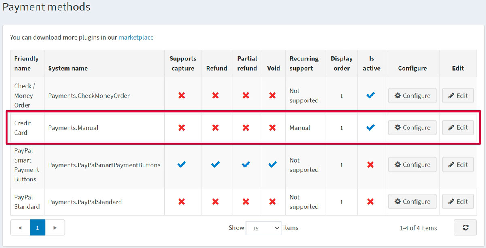
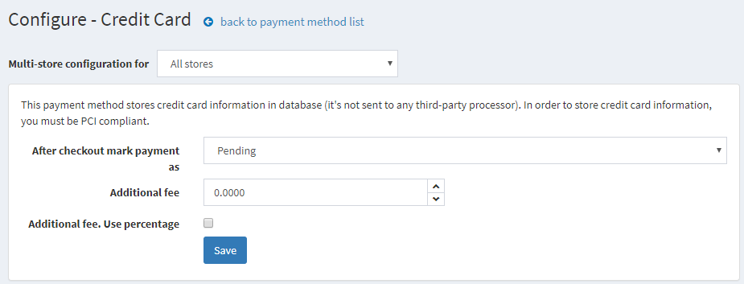
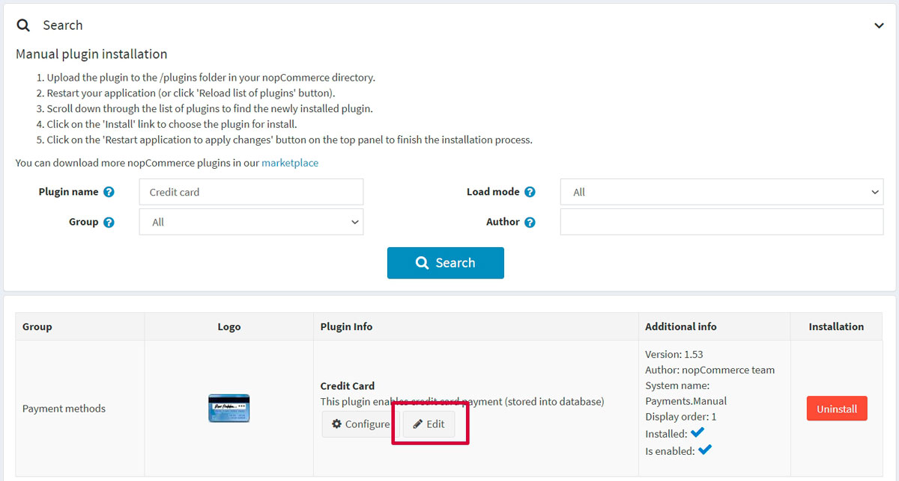
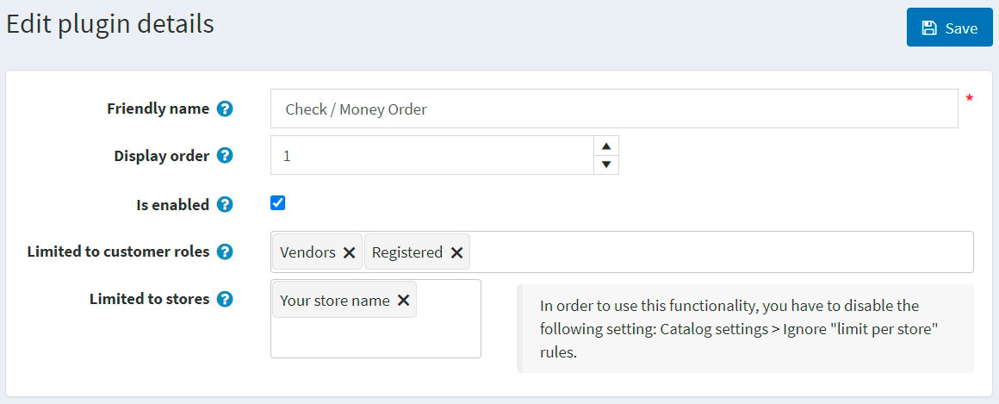

信用卡（手動處理）
這是一種特殊的付款外掛，它允許所有的訂單能在網站上成功建立，但它「不會」真正地向顧客收款或呼叫任何即時的支付閘道。如果您想要執行下列任一作業，建議使用此付款方式：
- 離線處理所有訂單
- 透過其他後勤系統手動處理訂單
- 在網站正式上線前進行端對端測試
若要設定此付款方式，請前往 設定 → 付款方式。接著在付款方式列表中找到 信用卡 (Payments.Manual) 付款方式：

啟用付款方式、編輯名稱與顯示順序
您可以編輯將顯示在前台網站給顧客看的付款方式名稱，或是調整其顯示順序。若要這麼做，請點擊付款方式列表頁面中該外掛列的 編輯 按鈕。您可以輸入 友好名稱 (Friendly name) 與 顯示順序 (Display order)。在此列中，您也可以透過 已啟用 (Is active) 欄位來啟用或停用此外掛。點擊 更新 按鈕，您的變更將會被儲存。
設定付款方式
在 設定 → 付款方式 頁面中，找到 信用卡 (Payments.Manual) 付款方式並點擊 設定 按鈕。屆時將顯示如下的 設定 - 信用卡 視窗：

請依照下列方式設定付款方式：
- 在 結帳後將付款標記為 欄位中，指定交易模式。
- 定義使用此方式的 額外費用。
- 在 額外費用為百分比 欄位中，定義是否要對訂單總額收取額外的百分比費用。若未啟用，則會使用固定金額。
點擊 儲存。
限制商店與顧客角色
您可以將任何付款方式限制在特定的商店與顧客角色。這意味著該方式將僅提供給特定的商店或顧客角色使用。您可以從 外掛列表 頁面進行此設定。
前往 設定 → 本地外掛。找到您想要設定限制的外掛。在我們的案例中，它是 信用卡。若要更快找到它，請使用頁面頂部的 搜尋 面板，並使用 付款方式 選項依據 外掛名稱 或 群組 進行搜尋。

點擊 編輯 按鈕，將顯示如下的 編輯外掛詳細資料 視窗：

您可以設定下列限制：
點擊 儲存。